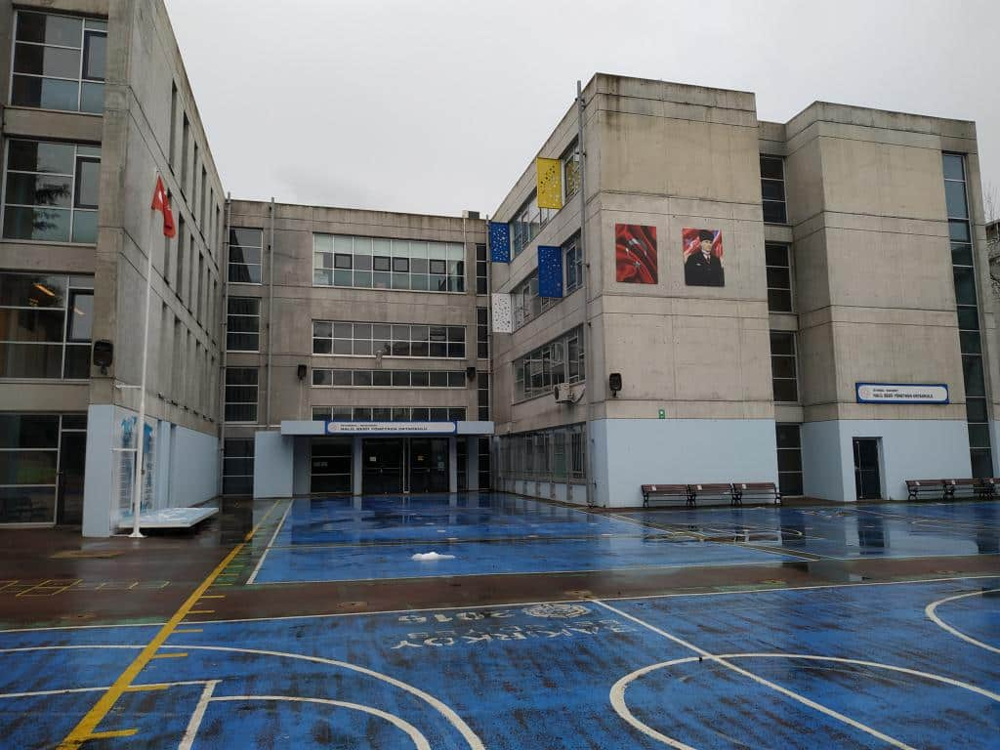
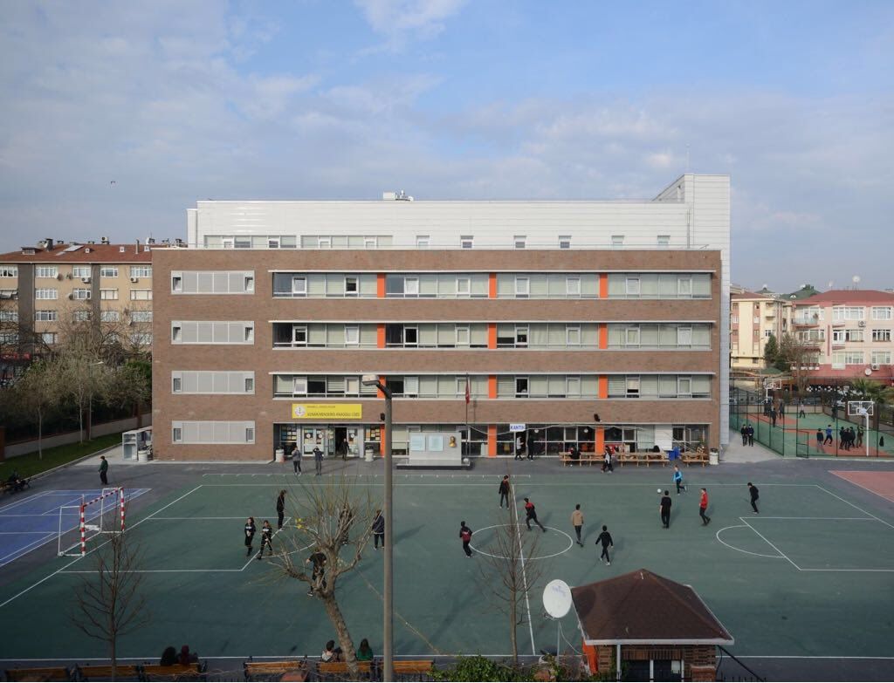
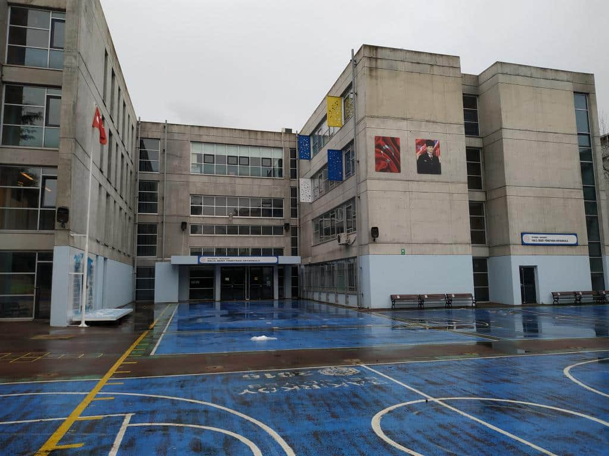
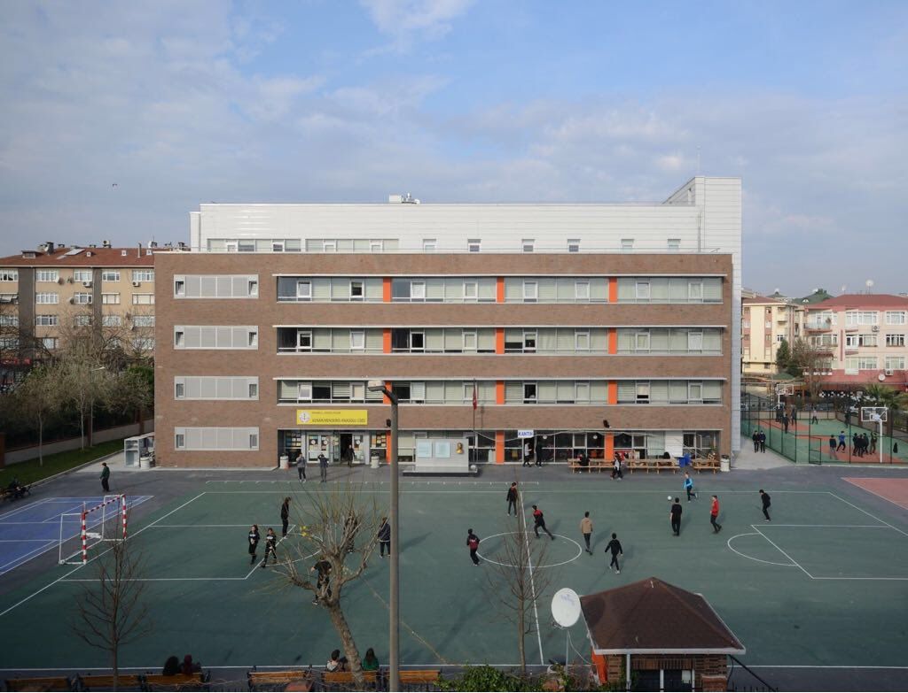

İlkokulu doğup büyüdüğüm semt olan Bağcılar'da, Bağcılar İlkokulu'nda okudum. Öğrenimime Bakırköy Halil Bedii Yönetken Ortaokulu ile devam ettim. Sonrasında girmiş olduğum LGS sınavında yüksek bir başarı elde ederek yüzde 1'lik dilimdeki Bahçelievler Adnan Menderes Anadolu Lisesi'ne yerleştim. Liseden mezun olduktan sonra girdiğim YKS sınavi sonucunda Sakarya Üniversitesi Bilgisayar Mühendisliği bölümünü kazandım. Şu an Sakarya Üniversitesi Bilgisayar Mühendisliği 1. sınıf öğrencisiyim.